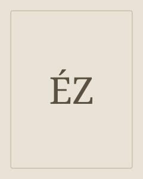

Émile Zola
Yksityinen kriisi näyttää myös ympäröivän yhteiskunnan paineen.
Émile Zola oli ranskalainen kirjailija ja journalisti sekä naturalistisen romaanin keskeinen kehittäjä. Hänen teoksissaan ympäristö ja aineelliset elinolot vaikuttavat voimakkaasti henkilöihin.
Etsi teokset kirjastostaElämä ja teokset
Zola syntyi Pariisissa ja kasvoi osan lapsuudestaan Aix-en-Provencessa. Kirjallisen työn lisäksi hän osallistui julkiseen keskusteluun, tunnetusti Alfred Dreyfusin puolustamiseen. Thérèse Raquin ja Germinal esittelevät hänen romaanitaiteensa eri mittakaavoja.
Tyyli ja teemat
Yksityiskohtainen havainto rakentaa suljetun kodin tai kokonaisen työyhteisön. Ruumiillisuus, halu ja aineelliset olot kuljettavat tapahtumia. Yksilön ratkaisuja tarkastellaan osana niitä voimia, joiden keskellä hän elää.
Ympäristö · Työ · Intohimo
Aloita tästä
Thérèse Raquin
Thérèsen ja Laurentin intohimo johtaa rikokseen, jonka seurauksia he eivät pääse pakoon. Zolan romaani kuvaa halua, syyllisyyttä ja ahdistavan yhteiselämän vähittäistä kiristymistä.
Germinal
Étienne Lantier saapuu pohjoisranskalaiselle kaivosseudulle ja joutuu keskelle työläisten kasvavaa vastarintaa. Zolan romaani kuvaa työn raskautta, nälkää, solidaarisuutta ja lakon seurauksia.
Miten tilan ja ruumiillisten kokemusten kuvaus vaikuttaa kohtauksen jännitteeseen?